100% Google Docs Compatible with Images (Localhost-Sync)
✅ Copied Successfully! Now go to your Google Doc and Press Ctrl+V
1.1 परिचय और भौगोलिक पहचान:
विश्व राजनीति के मानचित्र पर 'दक्षिण एशिया' (South Asia) एक अनूठी भौगोलिक, सांस्कृतिक और राजनीतिक इकाई है। इस क्षेत्र में मुख्य रूप से सात देश शामिल हैं—भारत, पाकिस्तान, बांग्लादेश, नेपाल, भूटान, श्रीलंका और मालदीव। 2007 में **अफगानिस्तान** को भी इसमें शामिल कर लिया गया, जिससे सदस्यों की संख्या आठ हो गई है। उत्तर में विशाल हिमालय पर्वत, पश्चिम में अरब सागर, पूर्व में बंगाल की खाड़ी और दक्षिण में हिंद महासागर इस क्षेत्र को प्राकृतिक रूप से शेष एशिया से अलग करते हैं।
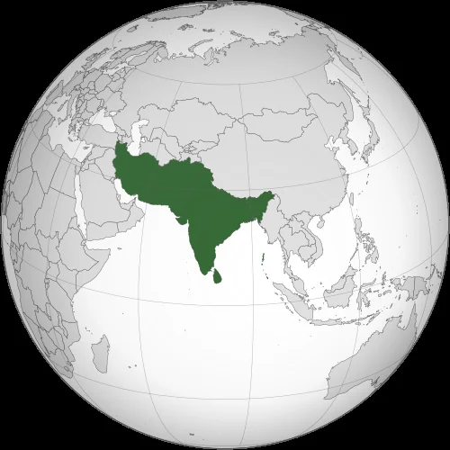
दक्षिण एशिया के देशों में कोई एक जैसी शासन प्रणाली नहीं रही है। यहाँ लोकतंत्र का संघर्ष और लोकतंत्र के प्रति जनता का गहरा लगाव कूटनीति की मुख्य धुरी है:
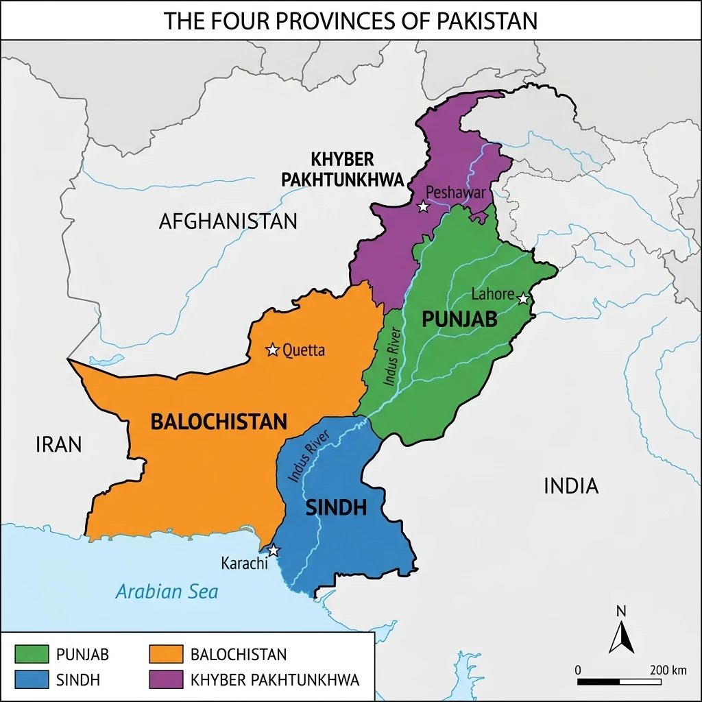
1947 में विभाजन के बाद पाकिस्तान की राजनीतिक यात्रा बेहद अस्थिर रही है। आजादी के तुरंत बाद राष्ट्रपिता मोहम्मद अली जिन्ना का 1948 में निधन हो गया और पहले प्रधानमंत्री लियाकत अली खान की 1951 में रावलपिंडी में गोली मारकर हत्या कर दी गई। इसके बाद पाकिस्तान में गहरी राजनीतिक अस्थिरता उत्पन्न हुई।
पहला संविधान और सैन्य तख्तापलट (1956-1958):
पाकिस्तान को अपना पहला संविधान बनाने में 9 वर्ष का समय लगा और 1956 में पहला संविधान लागू हुआ। राष्ट्रपति इस्कंदर मिर्ज़ा ने लोकतांत्रिक व्यवस्था को निलंबित कर दिया और अक्टूबर 1958 में जनरल अय्यूब खान ने तख्तापलट कर स्वयं को मुख्य मार्शल लॉ प्रशासक घोषित कर दिया।
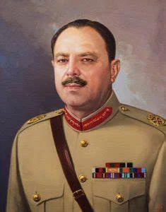
याहिया खान का दौर और पूर्वी पाकिस्तान का नुकसान (1969-1971):
अय्यूब खान के खिलाफ जब जनता का जनाक्रोश बढ़ा, तो उन्होंने 1969 में सत्ता जनरल याहिया खान को सौंप दी। याहिया खान के समय में 1970 में पाकिस्तान में पहले आम चुनाव हुए। पूर्वी पाकिस्तान (बांग्लादेश) में अवामी लीग के शेख मुजीबुर्रहमान को बहुमत मिला, लेकिन पश्चिमी पाकिस्तानी नेताओं ने उन्हें सत्ता देने से इनकार कर दिया। इसके बाद हुए दमन और 1971 के युद्ध के बाद पूर्वी पाकिस्तान अलग होकर 'बांग्लादेश' बन गया और सैन्य सरकार गिर गई।
जुल्फिकार अली भुट्टो का नागरिक शासन (1971-1977):
सैन्य पराजय के बाद जुल्फिकार अली भुट्टो के नेतृत्व में एक नागरिक लोकतांत्रिक सरकार बनी। 1973 में पाकिस्तान ने अपना नया लोकतांत्रिक संविधान अपनाया। भुट्टो ने समाजवादी नीतियां लागू कीं, लेकिन उन पर चुनाव में धांधली और भ्रष्टाचार के आरोप लगे, जिससे देश में गृहयुद्ध जैसी स्थिति बन गई।
जनरल जिया-उल-हक और इस्लामीकरण का दौर (1977-1988):
जुलाई 1977 में जनरल ज़िया-उल-हक ने तख्तापलट किया और भुट्टो को जेल भेज दिया। 1979 में भुट्टो को एक राजनीतिक मुकदमे के बाद फांसी दे दी गई। जिया-उल-हक ने पाकिस्तान का तीव्र इस्लामीकरण (Islamization) किया, शरिया कानूनों को लागू किया और सोवियत-अफगान युद्ध के दौरान अमेरिका के साथ मिलकर मुजाहिदीन को तैयार किया। 1988 में एक रहस्यमयी विमान दुर्घटना में उनकी मौत हो गई।
लोकतंत्र की पुनर्स्थापना और बेनज़ीर-नवाज़ प्रतिद्वंद्विता (1988-1999):
1988 के बाद लोकतंत्र बहाल हुआ और **बेनज़ीर भुट्टो** (PPP) तथा **नवाज़ शरीफ** (PML-N) के बीच सत्ता का द्वंद्व शुरू हुआ। दोनों ने बारी-बारी से शासन किया, लेकिन राष्ट्रपति और सेना ने अनुच्छेद 58(2b) का उपयोग कर इन सरकारों को कभी भी अपना 5 वर्ष का कार्यकाल पूरा नहीं करने दिया।
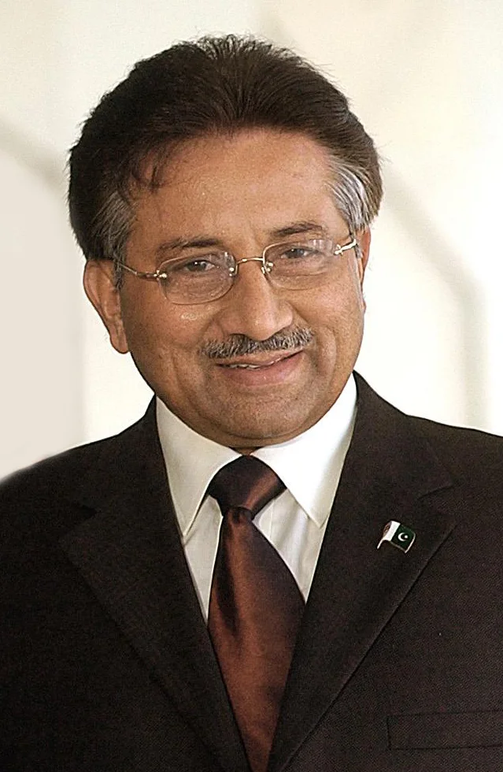
मुशर्रफ का सैन्य शासन और 9/11 (1999-2008):
अक्टूबर 1999 में कारगिल युद्ध की विफलता के बाद जनरल परवेज मुशर्रफ ने नवाज शरीफ का तख्तापलट कर दिया। 2001 में अमेरिका में हुए 9/11 हमलों के बाद मुशर्रफ ने आतंकवाद के खिलाफ अमेरिकी युद्ध का समर्थन किया, जिसने पाकिस्तान के आंतरिक क्षेत्रों में कट्टरपंथ को और बढ़ावा दिया। 2007 में बेनज़ीर भुट्टो की एक आत्मघाती हमले में हत्या कर दी गई, जिसके बाद व्यापक जनांदोलन ने मुशर्रफ को 2008 में राष्ट्रपति पद छोड़ने पर मजबूर कर दिया।
2008 से वर्तमान: नागरिक शासन की अस्थिरता:
2008 के बाद से पाकिस्तान में नागरिक सरकारें बनी हैं (आसिफ अली जरदारी, नवाज शरीफ, इमरान खान और वर्तमान में शहबाज शरीफ)। हालांकि, आज भी पाकिस्तान गहरे ऋण संकट, मुद्रास्फीति, राजनीतिक प्रतिशोध और पर्दे के पीछे से सेना (Deep State) के नियंत्रण से जूझ रहा है।
पाकिस्तान की लोकतांत्रिक राजनीति मुख्य रूप से दो प्रमुख राजनीतिक परिवारों के इर्द-गिर्द घूमती रही है:
1970 के दशक में **जुल्फिकार अली भुट्टो** ने पाकिस्तान पीपल्स पार्टी (PPP) की स्थापना की। वे 1971 से 1977 तक देश के प्रधानमंत्री रहे। उनके बाद उनकी बेटी **बेनज़ीर भुट्टो** दो बार पाकिस्तान की प्रधानमंत्री बनीं, जिनकी 2007 में हत्या कर दी गई थी। वर्तमान में बेनज़ीर के बेटे बिलावल भुट्टो पार्टी के मुख्य चेहरा हैं।
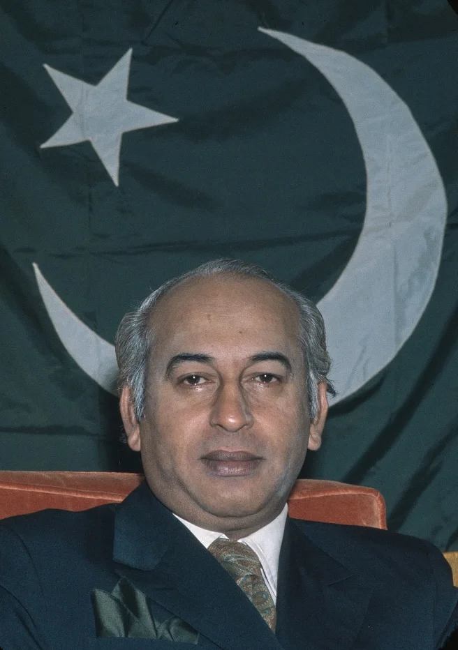
**नवाज शरीफ** पाकिस्तान मुस्लिम लीग (N) के प्रमुख हैं और वे तीन बार (1990, 1997, 2013) पाकिस्तान के प्रधानमंत्री बने, लेकिन एक भी कार्यकाल पूरा नहीं कर पाए। वर्तमान में उनके भाई शहबाज़ शरीफ पाकिस्तान के प्रधानमंत्री हैं।
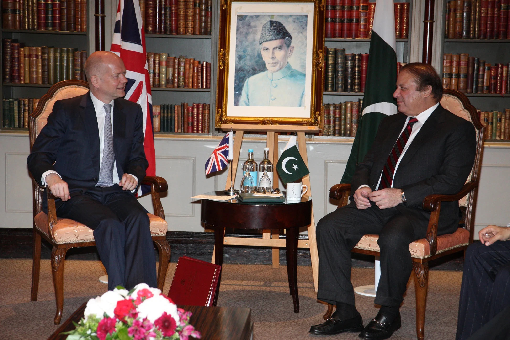
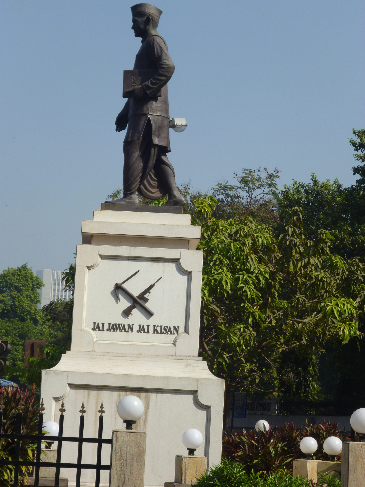
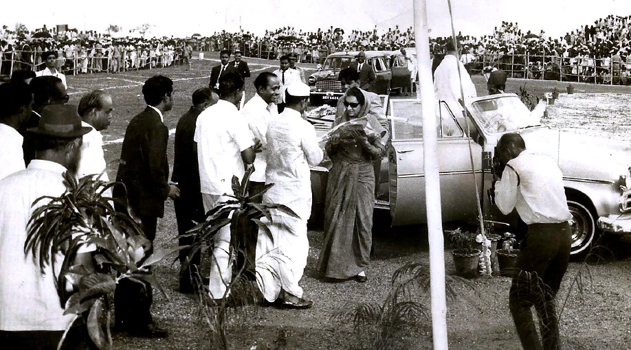
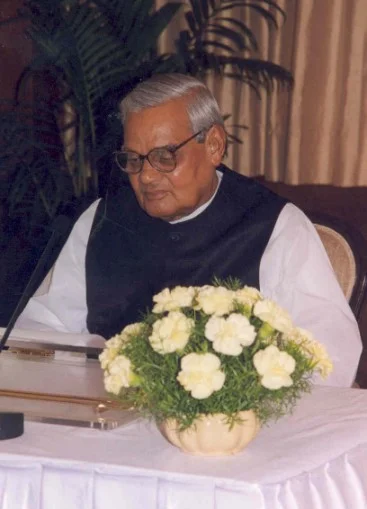
युद्धों के बाद दोनों देशों के बीच संबंधों को सुधारने के लिए तीन महत्वपूर्ण संधियाँ की गईं:
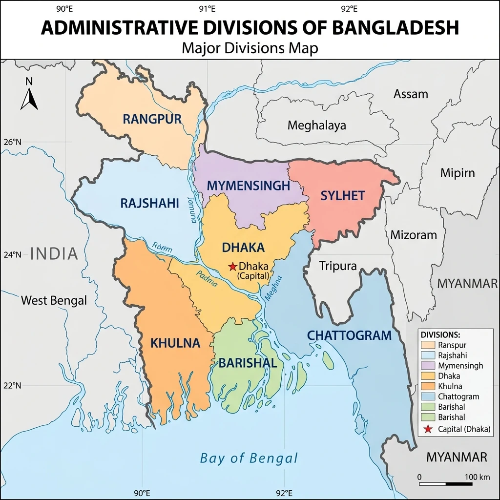
1947 से 1971 तक बांग्लादेश पाकिस्तान का हिस्सा था। पश्चिमी पाकिस्तान की सरकार ने पूर्वी पाकिस्तान पर जबरन उर्दू भाषा थोपने की कोशिश की। इसके खिलाफ 1952 में ढाका में एक विशाल **भाषा आंदोलन (Language Movement)** शुरू हुआ, जिसमें पुलिस गोलीबारी में कई छात्र शहीद हुए। इसके बाद बंगाली राष्ट्रवाद की भावना भड़क उठी। शेख मुजीबुर्रहमान ने अवामी लीग के माध्यम से बंगाली हितों के लिए 6-सूत्रीय स्वायत्तता की मांग की।
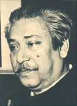
1970 के चुनावों में मुजीब की अवामी लीग को पूर्ण बहुमत मिला, लेकिन उन्हें जेल में डाल दिया गया और जनरल याहिया खान ने सैन्य कार्रवाई शुरू की। भारतीय हस्तक्षेप के बाद 16 दिसंबर 1971 को पाकिस्तानी सेना ने आत्मसमर्पण किया और नए देश का जन्म हुआ।
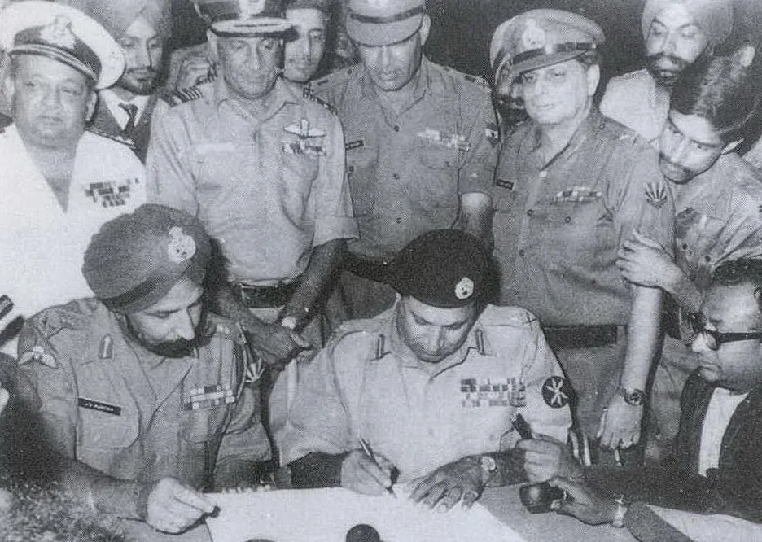
संविधान निर्माण और मुजीब का तानाशाही रवैया (1972-1975):
आजादी के बाद बांग्लादेश ने धर्मनिरपेक्षता, समाजवाद और लोकतंत्र पर आधारित एक प्रगतिशील संविधान बनाया। हालांकि, देश की आर्थिक स्थिति खराब रही और 1974 में भीषण अकाल पड़ा। 1975 में शेख मुजीब ने संविधान में संशोधन कर संसदीय व्यवस्था को हटाकर राष्ट्रपति शासन प्रणाली (Presidential System) लागू कर दी और अवामी लीग को छोड़कर अन्य सभी दलों पर प्रतिबंध लगा दिया, जिसे **BAKSAL** कहा गया। इससे देश में गहरा असंतोष फैला और 15 अगस्त 1975 को सेना के कुछ युवा अधिकारियों ने तख्तापलट कर शेख मुजीबुर्रहमान और उनके परिवार के अधिकांश सदस्यों की निर्मम हत्या कर दी।
सैन्य शासन और जियाउर रहमान (1975-1981):
मुजीब की हत्या के बाद देश में सैन्य कूपों का दौर शुरू हुआ। अंततः जनरल **जियाउर रहमान** ने सत्ता संभाली। उन्होंने बांग्लादेश नेशनलिस्ट पार्टी (BNP) का गठन किया और देश को अधिक मुस्लिम-उन्मुख नीतियों की ओर मोड़ा। मई 1981 में चटगांव में एक सैन्य विद्रोह के दौरान जियाउर रहमान की भी हत्या कर दी गई।
जनरल एच.एम. इरशाद और लोकतंत्र का संघर्ष (1982-1990):
जियाउर रहमान की हत्या के बाद लेफ्टिनेंट जनरल **एच.एम. इरशाद** ने तख्तापलट किया। इरशाद के शासन के खिलाफ छात्रों और विपक्षी दलों (अवामी लीग और बीएनपी) ने मिलकर एक बड़ा जनांदोलन शुरू किया। अंततः 1990 में इरशाद को पद छोड़ने के लिए मजबूर होना पड़ा और 1991 में फिर से बहुदलीय संसदीय लोकतंत्र की स्थापना हुई।
"बेगमों की लड़ाई" और आधुनिक काल (1991 से वर्तमान):
1991 के बाद से बांग्लादेश की राजनीति दो शक्तिशाली महिलाओं—**खालिदा जिया** (बीएनपी) और **शेख हसीना** (अवामी लीग) की प्रतिद्वंद्विता के इर्द-गिर्द घूमती रही है, जिसे मीडिया में 'बैटल ऑफ बेगम्स' (Battle of the Begums) कहा जाता है। 2009 से 2024 तक शेख हसीना के नेतृत्व वाली अवामी लीग सत्ता में रही, जिसके शासनकाल में बांग्लादेश ने वस्त्र उद्योग और मानव विकास सूचकांक में बड़ी आर्थिक प्रगति की, हालांकि हाल ही में व्यापक छात्र आंदोलनों के बाद देश में फिर से राजनीतिक संक्रमण का दौर देखा जा रहा है।
बांग्लादेश की लोकतांत्रिक सत्ता दो प्रमुख घरानों के बीच बंटी रही है:
शेख मुजीबुर्रहमान के परिवार से उनकी बेटी शेख हसीना लंबे समय तक बांग्लादेश की प्रधानमंत्री रहीं। यह घराना भारत-समर्थक और धर्मनिरपेक्ष नीतियों के लिए जाना जाता है।
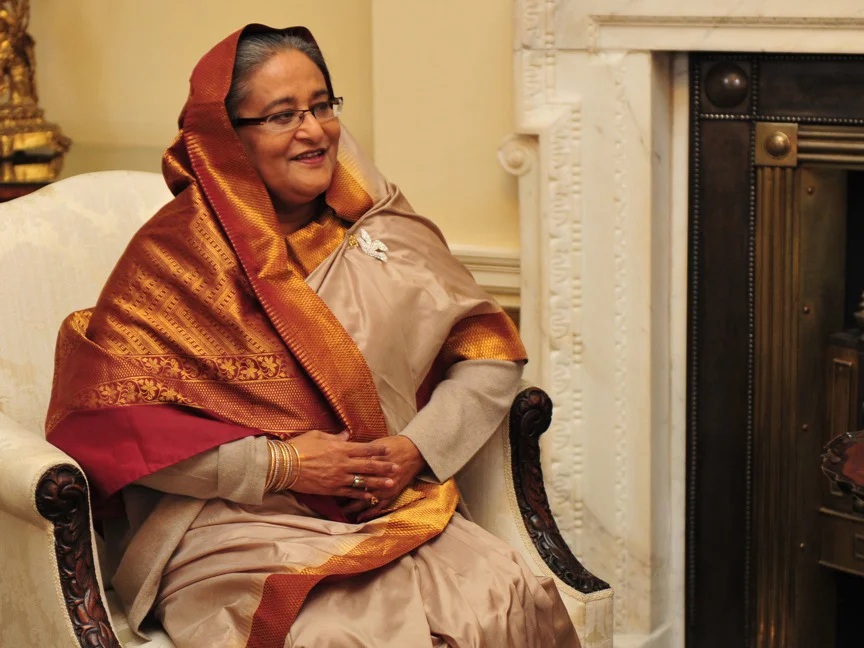
सैन्य शासक जनरल जियाउर रहमान की पत्नी खालिदा जिया बांग्लादेश की प्रधानमंत्री रहीं। यह घराना राष्ट्रवादी और पारंपरिक मुस्लिम नीतियों का प्रतिनिधित्व करता है।
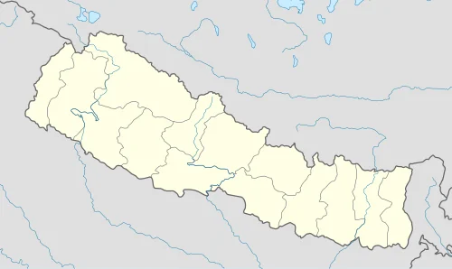
नेपाल में 100 से अधिक वर्षों तक शक्तिशाली **राणा वंश** (Rana Dynasty) के प्रधानमंत्रियों का शासन था, जबकि राजा केवल नाममात्र के थे। 1951 में भारत के सहयोग से राजा त्रिभुवन ने राणा शासन को समाप्त कर सत्ता संभाली और लोकतंत्र की नींव रखी।
राजा महेंद्र का तख्तापलट और पंचायत प्रणाली (1960-1990):
1959 में नेपाल में पहले लोकतांत्रिक चुनाव हुए, जिसमें बी.पी. कोइराला के नेतृत्व में नेपाली कांग्रेस की सरकार बनी। लेकिन 1960 में राजा महेंद्र ने लोकतांत्रिक सरकार को बर्खास्त कर दिया, राजनीतिक दलों पर प्रतिबंध लगा दिया और 1962 में 'दल-विहीन' **पंचायत प्रणाली (Panchayat System)** की शुरुआत की, जिसके तहत राजा ही सत्ता के शीर्ष पर थे।
प्रथम जन-आंदोलन (Jan Andolan I - 1990):
1990 में नेपाल के सभी राजनीतिक दलों ने राजा के खिलाफ एक राष्ट्रव्यापी आंदोलन शुरू किया। पुलिस दमन के बावजूद आंदोलन नहीं थमा और अंततः राजा बीरेन्द्र को झुकना पड़ा। उन्होंने नेपाल को एक **संवैधानिक राजतंत्र (Constitutional Monarchy)** बनाया और बहुदलीय लोकतांत्रिक संसद की स्थापना की।
नेपाल के इतिहास में 1 जून 2001 को एक भयानक मोड़ आया, जब नेपाल के लोकप्रिय राजा बीरेन्द्र वीर विक्रम शाह, रानी ऐश्वर्या और राजपरिवार के कुल 9 सदस्यों की नारायणहिटी राजमहल में अंधाधुंध गोलीबारी कर हत्या कर दी गई। आधिकारिक जांच के अनुसार, युवराज दीपेन्द्र ने स्वयं गोलीबारी की और अंत में खुद को भी गोली मार ली। इस हत्याकांड के बाद राजा बीरेन्द्र के भाई ज्ञानेन्द्र नेपाल के नए राजा बने, जो अत्यंत तानाशाही प्रवृत्ति के थे।
नेपाल में राजशाही और सामाजिक-आर्थिक असमानता के खिलाफ 1996 में नेपाल कम्युनिस्ट पार्टी (माओवादी) ने सशस्त्र जनयुद्ध (Armed Insurgency) शुरू किया। माओवादी चीनी साम्यवादी नेता माओ जेदांग के विचारों से प्रेरित थे और राजा की सेना के खिलाफ गुरिल्ला युद्ध लड़ रहे थे। इस संघर्ष में लगभग 17,000 लोग मारे गए।
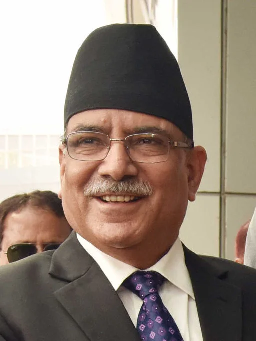
2005 में राजा ज्ञानेन्द्र ने प्रधानमंत्री को बर्खास्त कर फिर से पूर्ण सत्ता अपने हाथों में ले ली। इसके खिलाफ नेपाल के सात दलों के गठबंधन (SPA) और माओवादियों ने हाथ मिला लिया। अप्रैल 2006 में लाखों लोग सड़कों पर उतरे और व्यापक हड़ताल की। राजा को संसद बहाल करनी पड़ी और 28 मई 2008 को नेपाल की संविधान सभा ने राजशाही को सदा के लिए समाप्त कर देश को एक **संघीय लोकतांत्रिक गणराज्य** घोषित किया। 2015 में नेपाल ने अपना नया संविधान अपनाया, जिसके तहत माओवादी नेता प्रचंड और के.पी. शर्मा ओली वर्तमान में लोकतांत्रिक सत्ता चला रहे हैं।
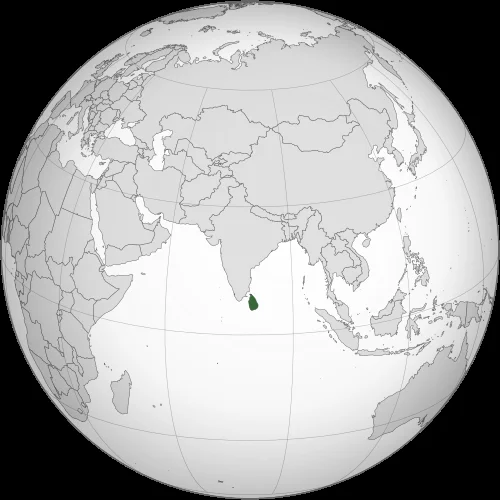
1948 में आजादी के बाद श्रीलंका (तत्कालीन सीलोन) की सत्ता मुख्य रूप से बहुसंख्यक **सिंहली समुदाय** के नेताओं के हाथों में आ गई। सिंहली नेताओं ने अपनी बहुसंख्यकवादी (Majoritarian) नीतियों के माध्यम से तमिलों को हाशिए पर धकेल दिया:
1956 का सिंहली-केवल अधिनियम (Sinhala Only Act):
प्रधानमंत्री एस.डब्ल्यू.आर.डी. भंडारनायके की सरकार ने 1956 में सिंहली भाषा को श्रीलंका की एकमात्र राजभाषा घोषित कर दिया। तमिलों को सरकारी नौकरियों, विश्वविद्यालयों और प्रशासन से बाहर कर दिया गया। 1972 के संविधान में बौद्ध धर्म को राज्य का मुख्य संरक्षण दिया गया, जिससे हिंदू और ईसाई तमिलों में अलगाव की भावना चरम पर पहुंच गई।
शांतिपूर्ण आंदोलनों की विफलता के बाद तमिल युवाओं में उग्रवाद बढ़ा। 1976 में **वेलुपिल्लई प्रभाकरन** ने एक हिंसक उग्रवादी संगठन **LTTE (Liberation Tigers of Tamil Eelam)** की स्थापना की। एलटीटीई ने श्रीलंका के उत्तर और पूर्व में तमिलों के लिए एक अलग संप्रभु राष्ट्र 'तमिल ईलम' की मांग की, जिससे 1983 में श्रीलंका में भीषण गृहयुद्ध छिड़ गया।
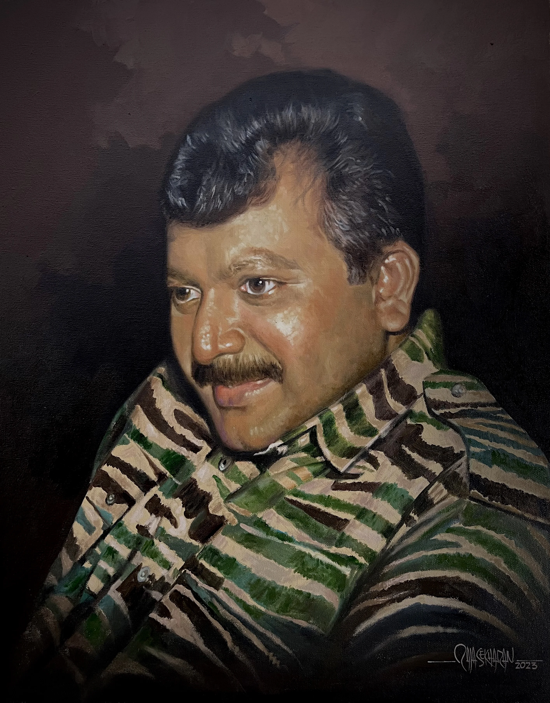
एलटीटीई दुनिया के सबसे खूंखार आतंकी संगठनों में से एक था, जिसने **सुसाइड बेल्ट (आत्मघाती जैकेट)** का आविष्कार किया और आत्मघाती हमलों (Black Tigers) को अपना मुख्य हथियार बनाया। एलटीटीई ने बच्चों को सैनिक बनाया और जल व वायु शाखाएं भी विकसित कीं।
प्रमुख राजनीतिक हत्याएं:
1987 के भारत-श्रीलंका समझौते के तहत प्रधानमंत्री राजीव गांधी ने तमिलों की रक्षा और शांति स्थापना के लिए **भारतीय शांति सेना (IPKF)** श्रीलंका भेजी। लेकिन आईपीकेएफ वहां एलटीटीई के साथ ही सैन्य संघर्ष में फंस गई और सिंहली राष्ट्रवादियों ने भी इसे भारत का सैन्य हस्तक्षेप माना। अंततः 1990 में भारत को बिना सफलता के भारी क्षति उठाकर सेना वापस बुलानी पड़ी।
गृहयुद्ध का अंत (2009):
2000 के दशक में राष्ट्रपति महिंदा राजपक्षे और उनके भाई गोटाबाया राजपक्षे (तत्कालीन रक्षा सचिव) ने एलटीटीई के खिलाफ एक निर्णायक सैन्य अभियान शुरू किया। मई 2009 में मुल्लाईतीवु के जंगलों में प्रभाकरन को मार गिराया गया, जिससे 26 वर्ष लंबे गृहयुद्ध का अंत हुआ।
2022 का आर्थिक संकट (Aragalaya Protests):
राजपक्षे घराने की गलत नीतियों (कर कटौती, रासायनिक खादों पर पूर्ण प्रतिबंध और विदेशी ऋणों) के कारण 2022 में श्रीलंका इतिहास के सबसे बड़े आर्थिक संकट में घिर गया। आवश्यक वस्तुओं (ईंधन, दवाओं, बिजली) की कमी के बाद 'अरागलया' (Aragalaya - जन संघर्ष) आंदोलन हुआ, जिसमें प्रदर्शनकारियों ने राष्ट्रपति भवन पर कब्जा कर लिया और राजपक्षे परिवार को सत्ता छोड़नी पड़ी।
श्रीलंका की राजनीति में तीन प्रमुख राजनीतिक घरानों का वर्चस्व रहा है:
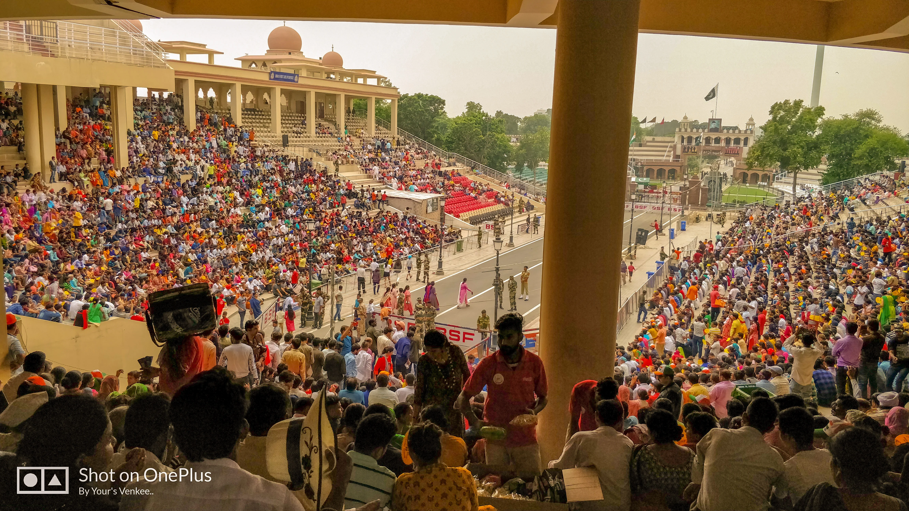
दोनों देशों के बीच सबसे बड़ा गतिरोध कश्मीर सीमा को लेकर है। 1947 के युद्ध के बाद से कश्मीर दो भागों में बंटा हुआ है। भारत के पास मुख्य जम्मू-कश्मीर है, जबकि एक हिस्सा पाकिस्तान के अनधिकृत नियंत्रण में है जिसे POK कहा जाता है। दोनों के बीच की अस्थाई सीमा को 'लाइन ऑफ कंट्रोल' (LOC) कहा जाता है।
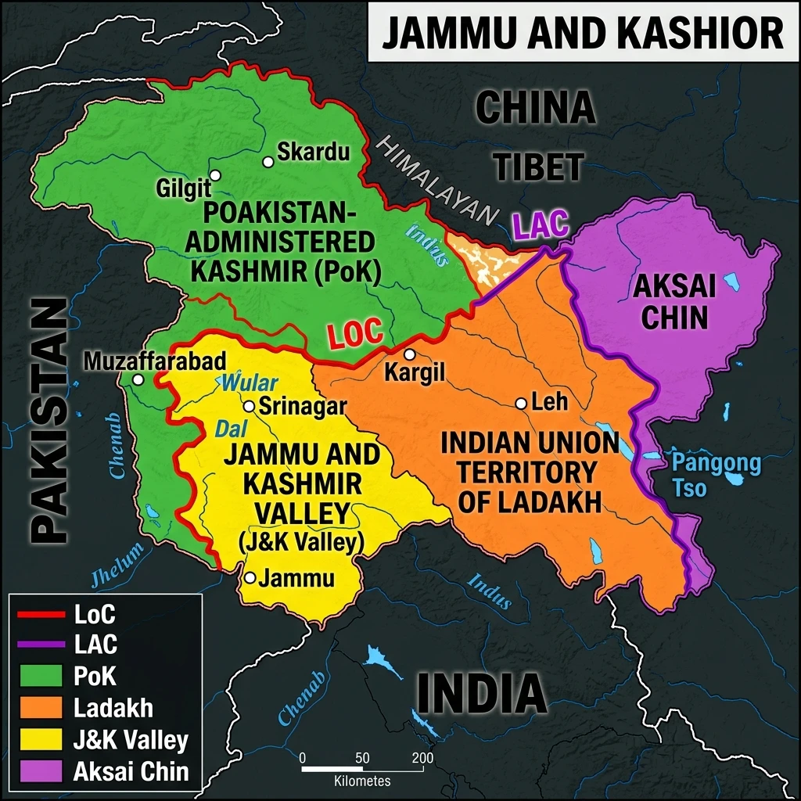
सियाचिन ग्लेशियर काराकोरम श्रेणी में स्थित दुनिया का सबसे ऊंचा और ठंडा युद्धक्षेत्र है। 1984 में भारत ने **'ऑपरेशन मेघदूत'** चलाकर पाकिस्तान की योजना से पहले इस पूरे ग्लेशियर पर नियंत्रण स्थापित कर लिया। तब से अब तक भारतीय सेना वहां तैनात है, और पाकिस्तान इसे खाली कराने की मांग करता आ रहा है।
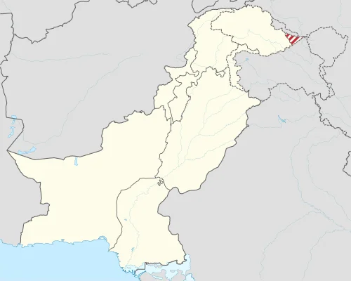
गुजरात के कच्छ क्षेत्र में स्थित 96 किलोमीटर लंबी एक दलदली पानी की धारा को **सर क्रीक** कहा जाता है। पाकिस्तान पूरे क्रीक पर अपना दावा ठोकता है (1914 के बॉम्बे सरकार के प्रस्ताव के तहत), जबकि भारत थलवेग सिद्धांत (Thalweg Principle) के अनुसार क्रीक के मध्य से सीमांकन चाहता है। यह विवाद दोनों देशों के समुद्री आर्थिक क्षेत्र (EEZ) और मछुआरों के अधिकारों को प्रभावित करता है।
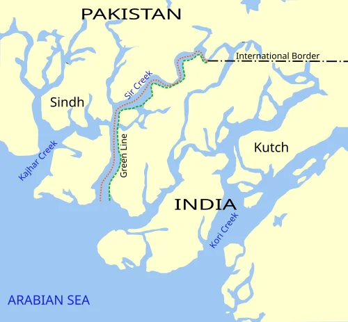
1960 में विश्व बैंक की मध्यस्थता से **सिंधु जल संधि (Indus Waters Treaty)** पर हस्ताक्षर किए गए। इसके तहत तीन पूर्वी नदियों (रावी, ब्यास, सतलुज) का नियंत्रण भारत को और तीन पश्चिमी नदियों (सिंधु, झेलम, चिनाब) का नियंत्रण पाकिस्तान को सौंपा गया। तमाम युद्धों और तनावों के बाद भी यह संधि सफलतापूर्वक चल रही है, हालांकि भारत द्वारा इन नदियों पर हाइड्रो-प्रोजेक्ट बनाने पर पाकिस्तान अक्सर आपत्ति उठाता रहता है।
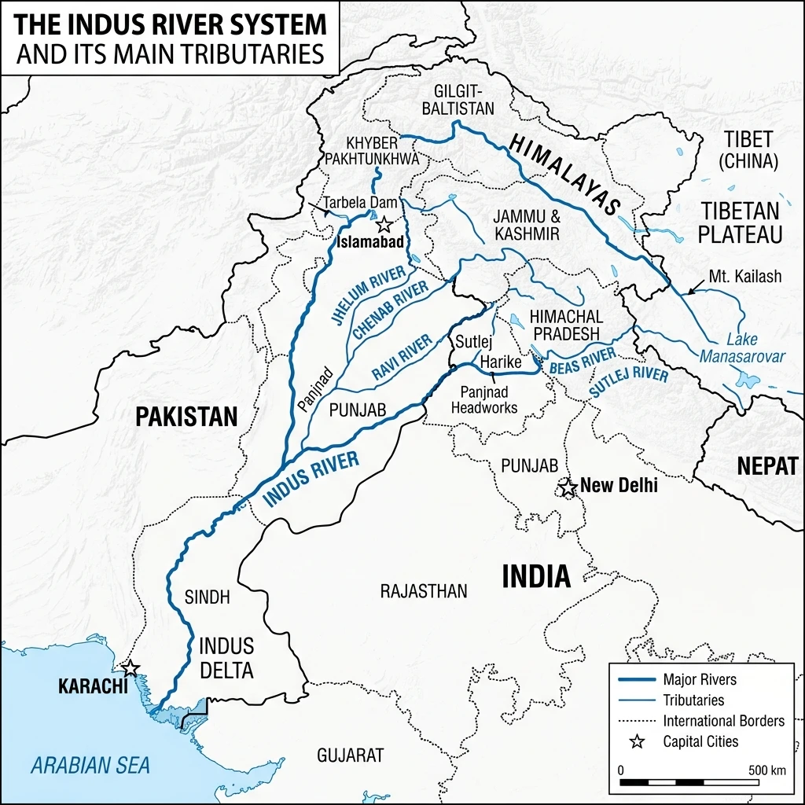
भारत और बांग्लादेश के बीच मजबूत आर्थिक संबंध हैं। 2015 में भूमि सीमा समझौता (LBA) करके दोनों देशों ने 40 वर्ष पुराना एन्क्लेव विवाद सुलझाया। इसके अलावा गंगा जल समझौता (1996) और पूर्वोत्तर भारत के उग्रवादियों के खिलाफ सुरक्षा सहयोग प्रमुख उपलब्धियां हैं।
तीस्ता नदी जल बंटवारे पर समझौता अभी भी लंबित है। इसके अलावा अवैध रूप से बंगाली प्रवासियों का भारत में प्रवेश (Illegal Migration) और बांग्लादेश में बढ़ता चीनी रणनीतिक प्रभाव तनाव का मुख्य कारण है।
1950 की भारत-नेपाल शांति और मैत्री संधि के तहत खुली सीमा है, जहां दोनों देशों के लोग बिना वीजा के आ-जा सकते हैं। नेपाल के पारगमन व्यापार को भारतीय बंदरगाहों से सुविधाएं प्राप्त हैं और भारत वहां पनबिजली परियोजनाओं व बुनियादी विकास में वित्तीय सहायता देता है।
नेपाल द्वारा कालापानी, लिपुलेख और लिम्पियाधुरा को अपने नए नक्शे में शामिल करने से सीमा विवाद बढ़ गया है। नेपाल का चीन की ओर झुकाव और भारत पर नेपाल की राजनीति में हस्तक्षेप करने के आरोप कूटनीतिक गतिरोध पैदा करते हैं।
भारत और श्रीलंका के बीच 1998 में मुक्त व्यापार समझौता (FTA) हुआ। 2022 के आर्थिक संकट में भारत ने श्रीलंका को ईंधन और दवाओं के लिए 4 अरब डॉलर की रिकॉर्ड मदद दी। पर्यटन और सांस्कृतिक क्षेत्र में व्यापक सहयोग है।
मन्नार की खाड़ी में भारतीय मछुआरों की गिरफ्तारी और कच्छाथीवू द्वीप का मुद्दा बड़ा विवाद है। श्रीलंका द्वारा चीनी सैन्य जहाजों को हंबनटोटा बंदरगाह पर रुकने की अनुमति देना भारत की समुद्री सुरक्षा के लिए गंभीर चुनौती है।
भूटान भारत का सबसे विश्वसनीय पड़ोसी देश है। भारत भूटान की पनबिजली परियोजनाओं (जैसे ताला, चूखा) में निवेश कर बिजली खरीदता है, जो भूटान की अर्थव्यवस्था का मुख्य आधार है। 2003 में भूटान ने भारतीय सेना के सहयोग से अपनी सीमा से उल्फा उग्रवादियों को साफ किया।
चीन-भूटान सीमा वार्ता (डोकलाम क्षेत्र) पर भारत की गहरी नजर है क्योंकि यह भारत के 'चिकन्स नेक' (सिलिगुड़ी कॉरिडोर) की सुरक्षा से जुड़ा है। भूटान में आर्थिक आत्मनिर्भरता और विकास ऋण को लेकर चिंताएं भी उभर रही हैं।
1988 के तख्तापलट के प्रयास के समय भारत ने 'ऑपरेशन कैक्टस' चलाकर मालदीव की सरकार की रक्षा की। भारत 'ग्रेटर माले कनेक्टिविटी' और पेयजल संकट के समय हमेशा मालदीव की मदद करता आया है।
मालदीव की राजनीति में "इंडिया आउट" अभियान और चीन समर्थक नेताओं का सत्ता में आना संबंधों को अस्थिर करता है। हाल ही में कूटनीतिक स्तर पर विवाद के बाद मालदीव से भारतीय सैन्य हेलीकॉप्टरों और कर्मियों को हटाए जाने की मांग उठी।
दक्षिण एशिया संघर्षों का क्षेत्र होने के साथ-साथ आपसी सहयोग और शांति प्रयासों का गवाह भी रहा है। क्षेत्र के देशों ने यह महसूस किया है कि केवल युद्धों से समस्याओं का समाधान संभव नहीं है, बल्कि आर्थिक एकीकरण और साझा विकास ही एकमात्र रास्ता है।
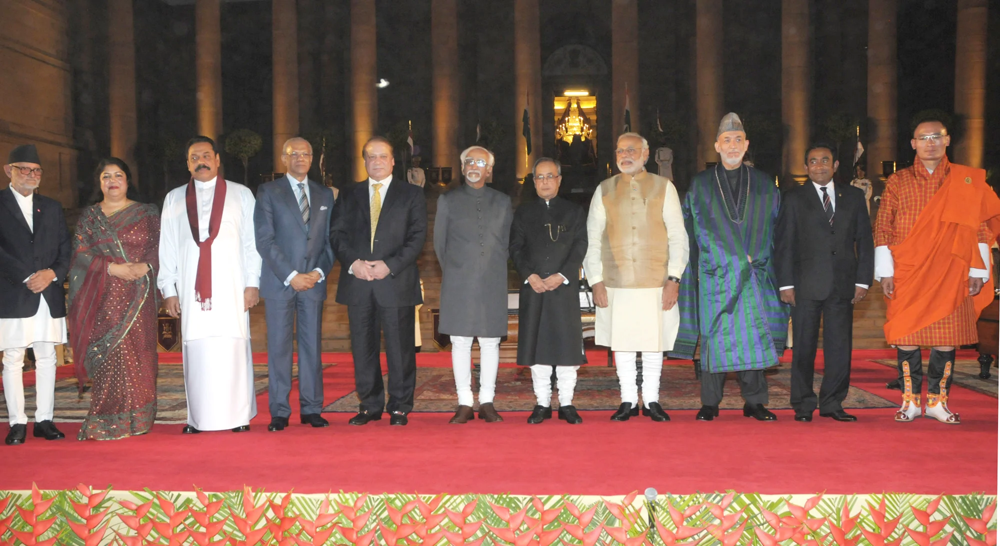
सार्क की स्थापना **8 दिसंबर 1985** को ढाका (बांग्लादेश) में की गई थी। इसके संस्थापक सदस्यों में भारत, पाकिस्तान, बांग्लादेश, नेपाल, भूटान, श्रीलंका और मालदीव शामिल थे। इसका मुख्य उद्देश्य दक्षिण एशिया के लोगों के कल्याण को बढ़ावा देना, जीवन स्तर में सुधार करना और आर्थिक व सांस्कृतिक विकास को तीव्र करना था।
सार्क की विफलता के कारण:
भारत और पाकिस्तान के बीच लगातार बने रहने वाले सीमा विवादों, कश्मीर के मुद्दे और पाकिस्तान द्वारा सीमा पार आतंकवाद को बढ़ावा देने के कारण सार्क पूरी तरह से निष्क्रिय हो चुका है। 2016 के बाद से कोई भी सार्क शिखर सम्मेलन आयोजित नहीं हो पाया है।
सार्क देशों ने 2004 में इस्लामाबाद में **साफ्टा (SAFTA)** समझौते पर हस्ताक्षर किए, जो 1 जनवरी 2006 से प्रभावी हुआ।
साफ्टा की चुनौतियां:
पाकिस्तान और कुछ अन्य पड़ोसी देशों को यह डर सताता है कि साफ्टा के माध्यम से भारत उनके बाजारों पर पूरी तरह कब्जा कर लेगा और उनके राजनीतिक हितों को प्रभावित करेगा। वहीं भारत का मानना है कि साफ्टा के बिना क्षेत्र का सर्वांगीण आर्थिक विकास संभव नहीं है।
Q1. दक्षिण एशिया के किन दो देशों में आज़ादी के बाद से लगातार लोकतंत्र रहा है?
उत्तर: भारत और श्रीलंका।
Q2. सार्क (SAARC) की स्थापना किस वर्ष हुई?
उत्तर: 1985 में ढाका (Dhaka) में।
Q3. 'एलटीटीई' (LTTE) का संबंध किस देश से था?
उत्तर: श्रीलंका (जातीय संघर्ष के लिए)।
Q4. पाकिस्तान में 1999 में तख्तापलट करने वाले सैन्य शासक कौन थे?
उत्तर: जनरल परवेज़ मुशर्रफ।
Q5. नेपाल में राजतंत्र को कब समाप्त किया गया?
उत्तर: 2008 में नेपाल एक लोकतान्त्रिक गणराज्य बना।
Q6. 'सिंधु जल संधि' (Indus Water Treaty) क्या है?
उत्तर: 1960 में भारत और पाकिस्तान के बीच सिंधु और उसकी सहायक नदियों के पानी के बंटवारे के लिए विश्व बैंक की मध्यस्थता में किया गया समझौता।
Q7. शेख मुजीबुर्रहमान (Sheikh Mujibur Rahman) कौन थे?
उत्तर: वे अवामी लीग के नेता और 'बांग्लादेश' के संस्थापक माने जाते हैं। उन्होंने पाकिस्तान के खिलाफ मुक्ति संग्राम का नेतृत्व किया।
Q8. साफ्टा (SAFTA) का मुख्य उद्देश्य क्या है?
उत्तर: दक्षिण एशिया को एक मुक्त व्यापार क्षेत्र बनाना ताकि सदस्य देशों के बीच व्यापारिक बाधाएं और शुल्क (Tax) कम हो सकें।
Q9. श्रीलंका में सिंहली-तमिल संघर्ष का मुख्य कारण क्या था?
उत्तर: बहुसंख्यक सिंहलियों द्वारा तमिलों के अधिकारों की उपेक्षा करना और सिंहली भाषा व बौद्ध धर्म को थोपना।
Q10. पाकिस्तान में लोकतंत्र के स्थिर न हो पाने के मुख्य कारणों का विस्तार से वर्णन करें।
उत्तर:
1. **सेना का हस्तक्षेप:** सेना का राजनीति में बहुत गहरा दखल है।
2. **धार्मिक प्रभाव:** कट्टरपंथी धर्मगुरुओं का दबाव।
3. **अंतरराष्ट्रीय स्वार्थ:** अमेरिकी और पश्चिमी देशों द्वारा सुरक्षा के नाम पर सैन्य शासन को समर्थन।
4. **राजनीतिक अस्थिरता:** भ्रष्टाचार और नेताओं के बीच आपसी खींचतान।
Q11. भारत के अपने पड़ोसियों के साथ संबंधों की वर्तमान स्थिति की चर्चा करें।
उत्तर:
1. **पाकिस्तान:** कश्मीर और आतंकवाद के मुद्दे पर भारी तनाव।
2. **बांग्लादेश:** आर्थिक सहयोग बढ़ा है, लेकिन जल विवाद और अवैध प्रवासियों का मुद्दा बना हुआ है।
3. **नेपाल:** साझी संस्कृति, लेकिन सीमा विवाद और चीन का प्रभाव चिंता का विषय।
4. **श्रीलंका और मालदीव:** भारत ने संकट के समय भरपूर आर्थिक और सुरक्षा सहयोग दिया है।
अगले भाग में हम **बोर्ड परीक्षा विशेष (Previous Year Questions)** और नक्शों (Maps) को देखेंगे।
बोर्ड परीक्षा में दक्षिण एशिया के नक्शे पर निम्नलिखित को पहचानने और भरने के लिए कहा जा सकता है:
इन प्रश्नों का अभ्यास आपको बोर्ड परीक्षा में सर्वोत्तम अंक दिलाएगा:
अध्याय 3 का मास्टर कोर्स संपन्न। अब आप बोर्ड परीक्षा के लिए 100% तैयार हैं!